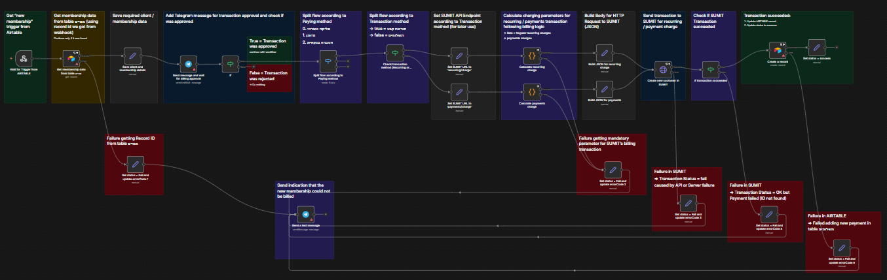
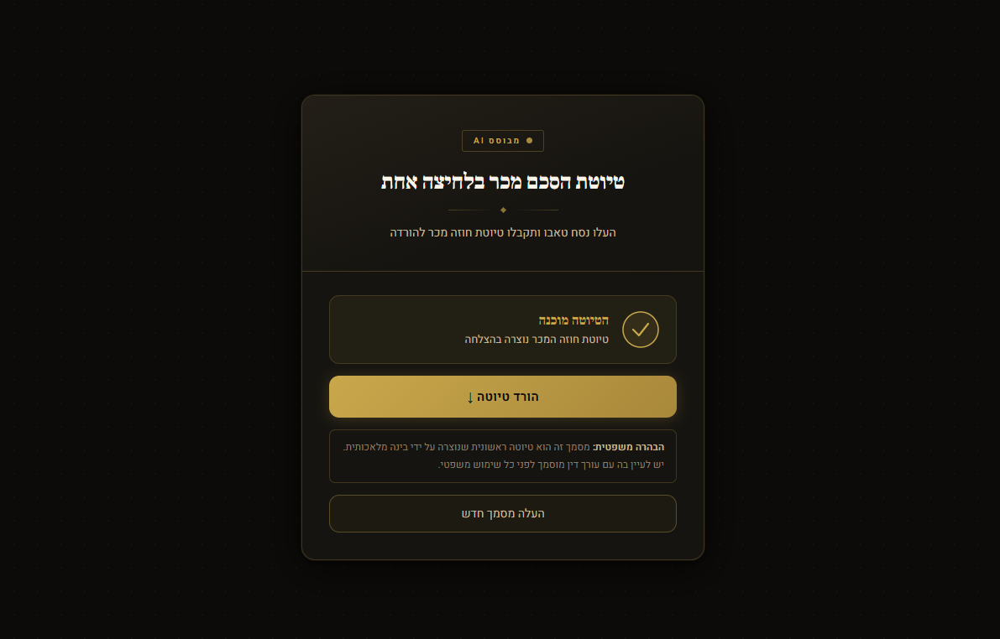
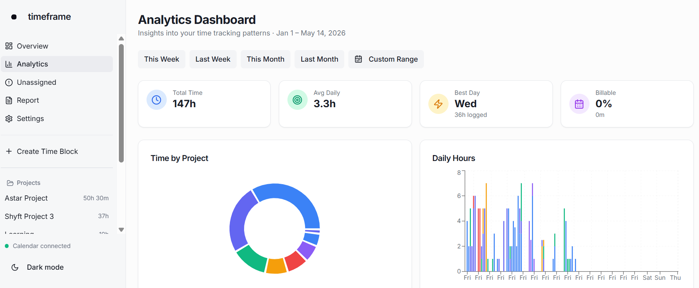
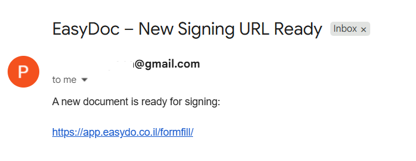

Built a multi-phase integration between an Airtable CRM and SUMIT (Israeli billing system) to fully automate the customer lifecycle from lead to invoice — eliminating manual data entry and billing delays.

Phase 1 — Sync
Established real-time data synchronization between Airtable and SUMIT. Any record change in either system propagated instantly to the other, maintaining a single source of truth.
Phase 2 — Auto-Create Customer on Status Change
Triggered automatic customer creation in SUMIT when a lead reached "Active Client" status in Airtable. Eliminated a manual step.
Phase 3 — Automated Billing with Human-in-the-Loop
Built a full billing workflow using code nodes. Invoices are generated and queued automatically, but require explicit owner approval before dispatch — preserving business control over financial outputs.
n8nAirtableSUMIT APIWebhooks
End-to-end billing automation with human approval gate — zero manual data entry, full audit trail.
02PDF → Document
Nesah Tabo → Sales Agreement
PDF Intelligence Pipeline — Structured Document Extraction
Built a pipeline that ingests an Israeli property registry document (Nesah Tabo PDF), extracts structured data fields using AI, and generates a formatted draft sales agreement — turning a manual task into a 20-30 second automated output.

Phase 1 — n8n POC
Prototyped the extraction and document generation workflow in n8n, validating the data model and output format with a real document before committing to code.
Phase 2 — Converted to Code
Migrated the validated logic into a Node.js application using Claude Code, giving it production reliability and full control over edge cases.
Phase 3 — Client-Facing UI
Added a React frontend — drag-and-drop PDF upload, extraction preview, and one-click .docx download. The tool is now fully usable by a non-technical client with no manual steps.
Claude CodeNode.jsReactVercelOpenAIdocxtemplatern8n (POC)
Complex legal PDF → structured extraction → sales agreement draft document output. Live on Vercel.
03Time tracking App
Timeframe
AI-Assisted Time Intelligence on Google Calendar
Designed and built Timeframe: a system that uses Google Calendar as a structured data source, processes time allocation across projects and phases and surfaces it through a clear interface — enabling personal awareness and client-shareable phase-based reporting.

Concept — Calendar as a Data Layer
Recognized that Google Calendar, when used with consistent event naming conventions, becomes a rich structured dataset. Designed an event taxonomy (project / stage / type) that feeds downstream analytics.
Processing — AI-Assisted Classification
Built logic that parses calendar events, classifies them by project and phase using AI, and computes time distribution — surfacing where hours actually go.
Output — Reporting Interface
Built a dashboard view: per-project summaries, phase breakdowns and exportable client reports — turning raw calendar data into professional deliverables.
Google Calendar APIClaude Code
Raw calendar data → structured time intelligence dashboard with client-shareable phase reports.
04Python Pipeline
Insurance PDF → E-Signature Pipeline
Automated Signature Placement on Hebrew Insurance Forms
Built a Python pipeline as a POC for an insurance client that automatically locates signature fields in Hebrew PDF forms, injects EasyDoc-compatible placeholders and triggers the e-signature flow via API — replacing a fully manual process.

Module 1 — PDF Processing
Used PyMuPDF to scan the insurance form, locate every signature anchor (the Hebrew text marking where signatures are required), and inject an invisible placeholder at each location. The modified PDF preserves the original layout exactly.
Module 2 — API Integration
Authenticated with the EasyDoc API, created a signing form, assigned the recipient and uploaded the modified PDF. EasyDoc detects the placeholders, converts them into interactive signature fields, and returns a unique signing URL sent directly to the signer.
PythonPyMuPDFEasyDoc APIwatchdog
End-to-end pipeline — Hebrew insurance PDF in, signing link out. Zero manual steps, zero visible artifacts in the final document.
LLMs · n8n · Make · Lovable · Claude Code · React · Node.js · Airtable · Vercel · Google APIs